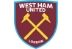

Neymar came into prominence at Santos, where he made his professional debut aged 17. He helped the club win two successive Campeonato Paulista championships, a Copa do Brasil, and the 2011 Copa Libertadores; the latter being Santos' first since 1963.


Neymar Jr

Lionel Messi
Lionel Messi came into prominence at Santos, where he made his professional debut aged 17. He helped the club win two successive Campeonato Paulista championships, a Copa do Brasil, and the 2011 Copa Libertadores; the latter being Santos' first since 1963.

Cristiano Ronaldo
Cristiano Ronaldo came into prominence at Santos, where he made his professional debut aged 17. He helped the club win two successive Campeonato Paulista championships, a Copa do Brasil, and the 2011 Copa Libertadores; the latter being Santos' first since 1963.

Paulo Dybala
Paulo Dybala came into prominence at Santos, where he made his professional debut aged 17. He helped the club win two successive Campeonato Paulista championships, a Copa do Brasil, and the 2011 Copa Libertadores; the latter being Santos' first since 1963.

Mesut Ozil
Mesut Ozil came into prominence at Santos, where he made his professional debut aged 17. He helped the club win two successive Campeonato Paulista championships, a Copa do Brasil, and the 2011 Copa Libertadores; the latter being Santos' first since 1963.

Mauro Icardi
Mauro Icardi came into prominence at Santos, where he made his professional debut aged 17. He helped the club win two successive Campeonato Paulista championships, a Copa do Brasil, and the 2011 Copa Libertadores; the latter being Santos' first since 1963.

Di Maria
Di Maria came into prominence at Santos, where he made his professional debut aged 17. He helped the club win two successive Campeonato Paulista championships, a Copa do Brasil, and the 2011 Copa Libertadores; the latter being Santos' first since 1963.

Kylian Mbappé
Kylian Mbappé came into prominence at Santos, where he made his professional debut aged 17. He helped the club win two successive Campeonato Paulista championships, a Copa do Brasil, and the 2011 Copa Libertadores; the latter being Santos' first since 1963.

Mohamed Salah
Mohamed Salah came into prominence at Santos, where he made his professional debut aged 17. He helped the club win two successive Campeonato Paulista championships, a Copa do Brasil, and the 2011 Copa Libertadores; the latter being Santos' first since 1963.

Harry Kane
Harry Kane came into prominence at Santos, where he made his professional debut aged 17. He helped the club win two successive Campeonato Paulista championships, a Copa do Brasil, and the 2011 Copa Libertadores; the latter being Santos' first since 1963.

Kevin De Bruyne
Kevin De Bruyne came into prominence at Santos, where he made his professional debut aged 17. He helped the club win two successive Campeonato Paulista championships, a Copa do Brasil, and the 2011 Copa Libertadores; the latter being Santos' first since 1963.

Philippe Coutinho
Philippe Coutinho came into prominence at Santos, where he made his professional debut aged 17. He helped the club win two successive Campeonato Paulista championships, a Copa do Brasil, and the 2011 Copa Libertadores; the latter being Santos' first since 1963.
MATCHES
Have you ever dreamed of training like a professional football player?
vs
GFA - AI WAHDA FC
Out match against Chelsea
Read The Resume

vs
GFA - AI WAHDA FC
Out match against Chelsea
Read The Resume
vs
GFA - AI WAHDA FC
Out match against Chelsea
Read The Resume
vs
GFA - AI WAHDA FC
Out match against Chelsea